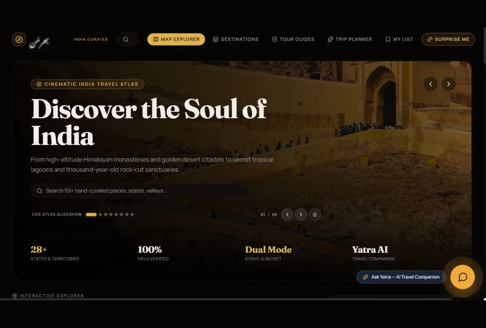
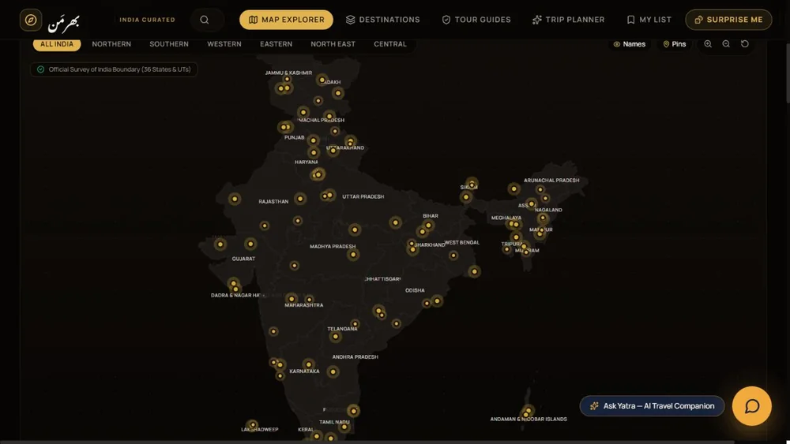
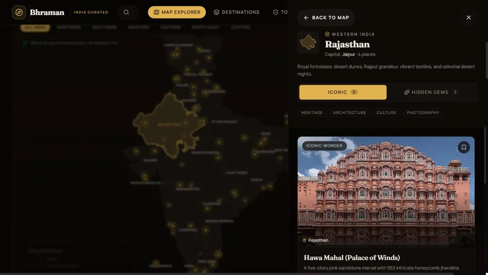

Case study
Bhraman
I paired a clickable map of India with state guides so visitors can discover places they might never think to search for by name.

The goal
Make it easy for curious travelers to start with a place on the map and build a short list of things to explore nearby.
The approach
Selecting a state highlights it on the map and opens a guide alongside it. Separate Iconic and Hidden Gems tabs let visitors switch between well-known landmarks and quieter finds while staying in the same state.
What to expect
The live prototype lets visitors browse the map or search for a place directly. Rajasthan, for example, opens with landmarks such as Hawa Mahal and a separate set of hidden gems.
The interface in use
- Scroll to the interactive map and choose a state such as Rajasthan.
- Browse the state guide alongside the highlighted area on the map.
- Switch between Iconic and Hidden Gems to see different places in the same state.


Next case study